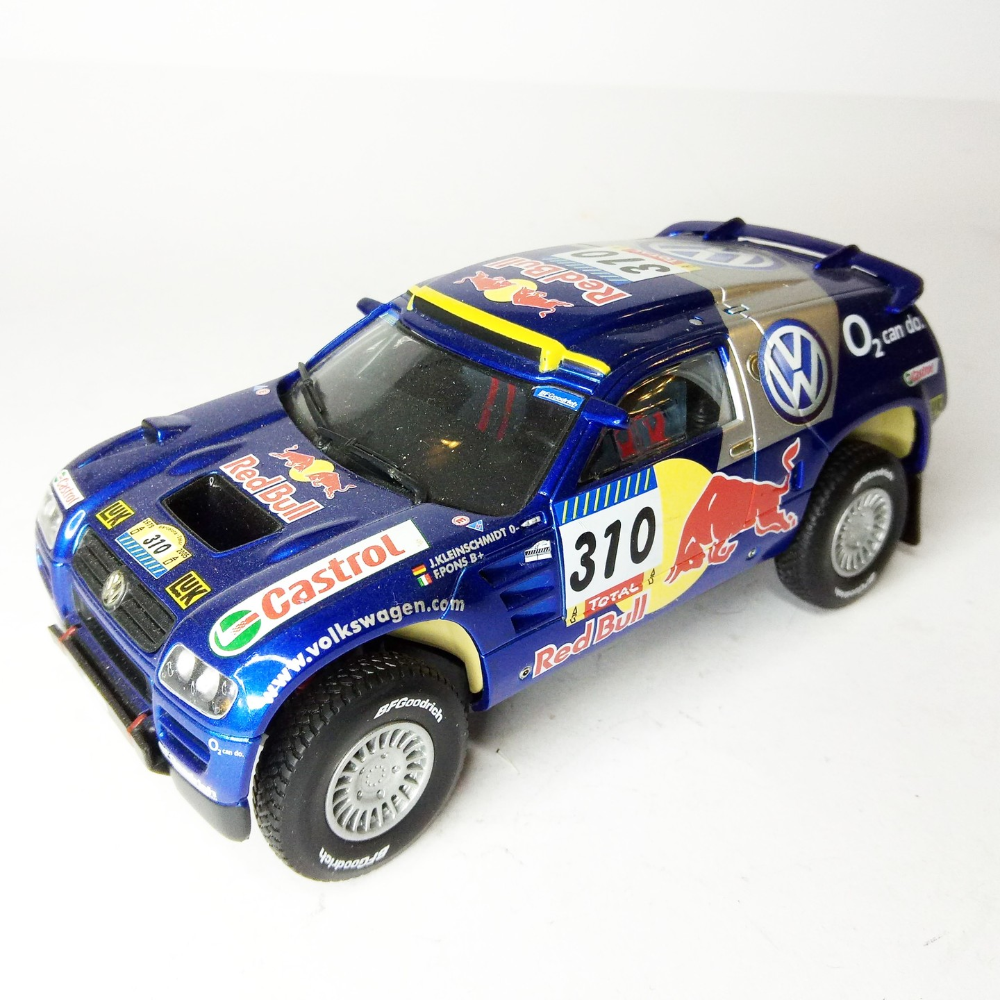
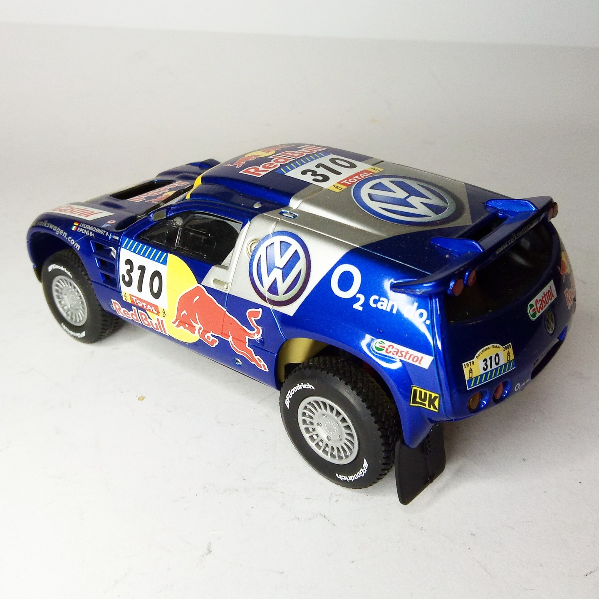

Auto e veicoli stradali · scale model archive
Volkswagen Touareg
Volkswagen Touareg — Kit: Revell, Scale: 1/32. Kleinschmidt-Pons. Paris-Dakar 2001 winner Snap-on kit. very colorful #1/32 #Revell #Volkswagen #Touareg

Photo gallery

English description
Kleinschmidt-Pons. Paris-Dakar 2001 winner
Snap-on kit. very colorful
#1/32 #Revell #Volkswagen #Touareg
Descrizione italiana
Vincitrice Kleinschmidt-Pons. Paris-Dakar 2001.
Snap-on kit. very colorata.